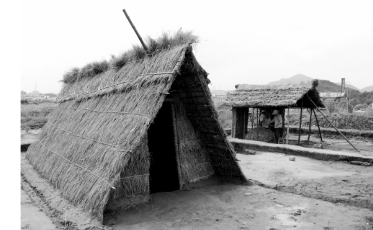
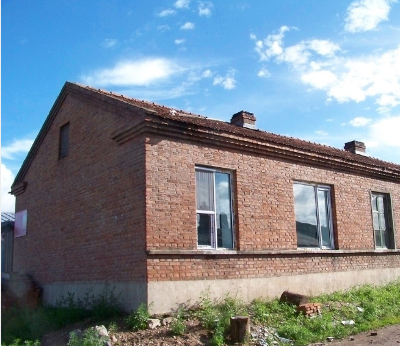
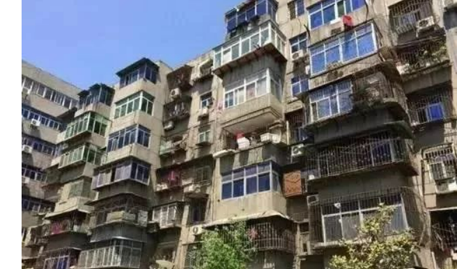
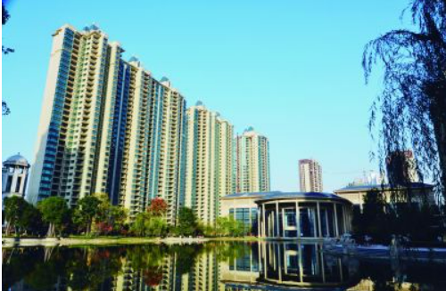

Let us go into the history of house changes !
|
简陋时代（1979-1990） 住的是土坯房，条件较差的住的还是茅草房房子四边的墙壁是土坯筑成的，墙壁上部分用一些竹席围住四周，顶上是简易的瓦顶盖，只有一扇窗户，屋内比较阴暗潮湿。家里有结婚的会在老房子隔壁搭建了一个棚棚住，就算安了一个家，这个家和以前一大家人住的房子没什么区别。 那一时期，城镇居民住得也并不好，他们主要解决的是没房可住的问题。一大家子人住在总共不到20平方米的平房里或筒子楼里。有的家庭遇到子女结婚，家里实在住不下，只好就在屋前搭个小棚子，仅能放下一张双人床。这个时期，有一个能够让自己居住的地方已经是非常满足的事了，无论是住房环境还是房屋建筑都很简陋，根本谈不上居住条件方面的要求，屋里当然也基本上没有家具，换洗的衣服、被褥就放在几个纸箱子里。 |
 |
第二阶段 商住混合时代（1991-1999） 这一时期，无论是农村还是城市的老百姓，日子都渐渐地好过起来，住房也有所改善出现了一楼一底的平房。无论是农村还是城市，这一阶段住房的变化都是解决扩大入住面积的问题。在这一阶段，城市里的住宅环境和舒适度也是比较差的。很多单位开始自建住房、集资建房、或与其他单位合建住房，职工们的住房条件得到了改善，当时分房主要是根据职务和工龄排队，所以，各机关企事业单位的住房依然比较紧张。商品房开发在这一时期从沿海城市发展到内地。由于房地产开发在内地刚刚起步，开发商们主要修建的都是商业与住宅混合 房，绝大多数楼盘的规划都是以商业为主，修建好的商品房一般都是底下几层作为营业房， 楼上才是居住房。住户入住后周围环境较差，各个小区内的安保设施、绿化配套也都处于初级阶段。 |
 |
第三阶段 品牌时代（2000-2005） 居住条件和环境、包括生活习惯都有较大改变。 随着城市化进程的不断发展， 这一时期，全国的房地产市场开始火了起来。这一时期商品房开发的主流开始注重品牌， 市民的住宅环境及舒适度有所提高由于城镇职工工资收入、住房公积金、住房补贴标准的大幅度提高，各 机关企事业单位的职工想买大房子的欲望不断增强，在选房时不再更多地考虑房价的多少，而关注的是房子的大小。先富起来的人们开始购买大户型的商品房、复式楼、花园小区、别墅等。随着人们生活水平的提高，装修也开始成为热点，在追求宽 敞的同时，人们还在追求着居住环境的各种配套设施，要住得舒服，住得开心。 |
 |
第四阶段 纯居住时代（2006以后） 随着经济社会的快速发展，城镇居民的经济收入在这一时期不断增加，人们开始更加注重对住房条件的提升，倡导住房的舒适度。有线数字电视、互联网预留接口、停车场、物业管理等都已成为当前新开发小区规划建设的先决条件。这一时期，大多数新开发的楼盘开始注重个性品牌和人居环境，各新建小区也实现了封闭式管理，增强了业主的安全感。此外，大多数市民买房很注重小区周围的环境，小区绿化、健身场所、学校、商场、超市、交通等公共基础设施。对于开发商来讲，房屋的质量更能影响到产品的销售，他们也在不断提升房屋的建筑质量，一些开发商，开始修建纯居住小区，住户入住后，不再受楼下商铺的打扰。近年来投资开发的小区，其楼房的建造结构和施工质量有了很大提升。 |
 |